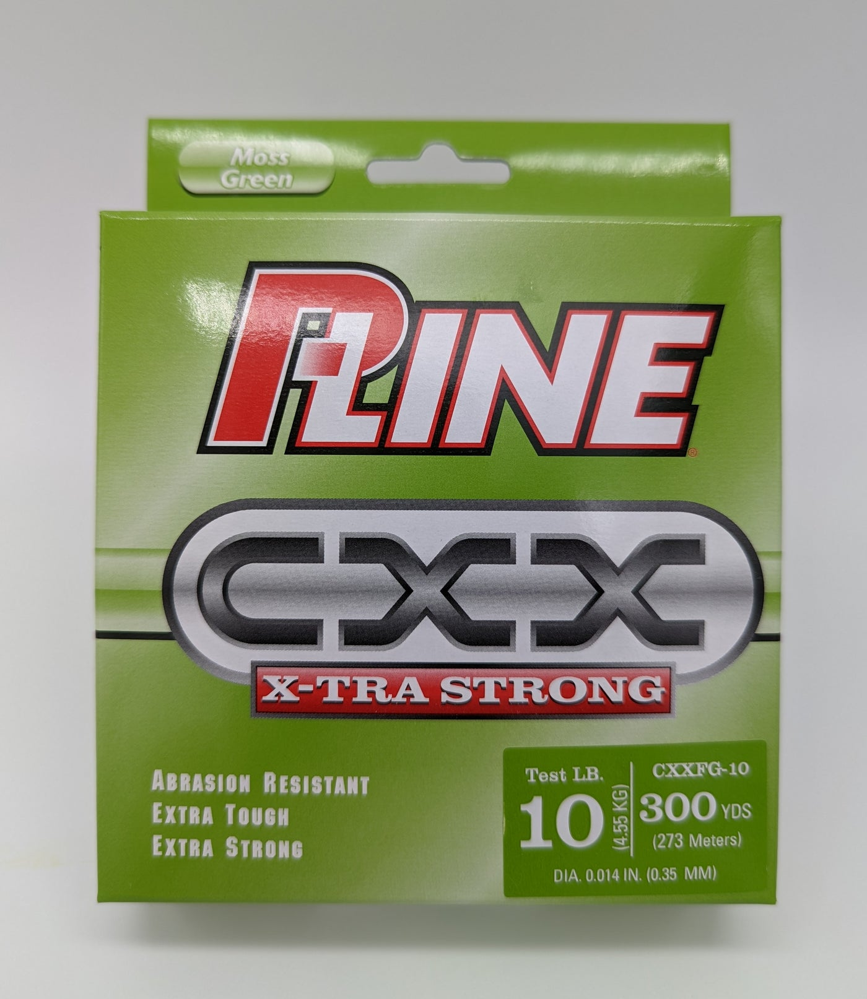

P-Line CXX X-Tra Strong
Diameter chart, reel capacity & backing guide

CXX X-Tra Strong is P-Line's copolymer main line. This US package-label reference covers Moss Green CXXFG 10 and 12 lb in 300-yard cartons. The photos do not establish a production year or the newest edition; other CXX colors and packages are not covered.
- Construction
- Copolymer main line
- Listed strengths
- 10-12 lb
- Line type
- Copolymer main line
CXX: check diameter as well as pound test
CXX is P-Line's copolymer main line for demanding cover and shock-loading applications. The 10 and 12 lb packages covered here have substantial diameters, so check handling and capacity before choosing them for a small spinning reel. Match the strength to the rod and lure, and keep spare working line for retying after contact with cover.
How much CXX will fit?
Calculated estimates, not measured fills. Stop at the reel manufacturer's fill level even if some line remains.
P-Line CXX X-Tra Strong diameter chart
US Moss Green cartons only: CXXFG-10, 10 lb, .014 in/.35 mm, 300 yd; CXXFG-12, 12 lb, .0148 in/.37 mm, 300 yd. Production dates are unestablished. Both diameters are independently printed values, not measurements or retailer-authored chart entries.
| Strength | Inches | mm | Spools (yd) |
|---|---|---|---|
| 0.014 | 0.350 | 300 | |
| 0.0148 | 0.370 | 300 |
Choosing your CXX strength
The verified choices are 10 and 12 lb, not every intervening or heavier CXX strength. Use the rod and fishing conditions to choose between suitable options, then check capacity.
The .0148-inch 12 lb carton should not be rounded to a different retailer diameter. A small diameter difference changes the amount of line that fits.
Crystal Clear CXXFC and quarter-pound CXXQC packages are separate identities. A length shown for one of those packages does not extend this Moss Green filler reference.
Specification-based guidance for these two Moss Green packages only. No claim of measured abrasion resistance, breaking strength, or casting superiority.
Want a guided recommendation?
Continue in the Setup WizardSame pound test, different diameters
At your selected strength
Loading diameter comparisons...
What changes with another line?
Nearby diameters in the line database
| Line | Strength | Inches | Difference |
|---|---|---|---|
| Loading line database... | |||
Backing, working line & leaders
One 300-yard package, several possible fills
First determine how much working CXX your fishing requires. A 300-yard carton may supply more than one short working fill, but reserve line for casts, runs, retying, and any damaged section you remove.
Backing can reduce the working fill
Backing occupies the space below the CXX you intend to fish. Keep its joining knot below the working section, wind evenly, and stop at the reel maker's recommended fill level.
Main line is not a leader specification
These are CXX mainline cartons. A separate leader is an independent tackle choice; its diameter, length, and knot should not be inferred from the CXX package.
How Much Fits on These Reels?
Estimated full-spool capacity for the CXX strength selected above, with no backing. These are calculated examples, not physical tests or recommendations for every pairing.
Loading capacity estimates...
CXX questions, answered
Which CXX packages do these numbers describe?
Only US Moss Green CXXFG-10 and CXXFG-12, each labeled 300 yards. Other colors, bulk lengths, and production editions are not verified by these photos.
Is this a current CXX availability chart?
No. These are legible, undated production-label photos with matching official US identities. The page does not establish manufacturing year, current stock, or an unchanged latest formulation.
Why is 12 lb shown as .0148 inch?
That is the value printed on the photographed CXXFG-12 carton, alongside .37 mm. It is preserved rather than replaced by a rounded retailer value.
Does 300 yards mean the reel should take all of it?
No. Package length is the amount supplied, not the reel's capacity. Match the line diameter to the reel's rating and leave the recommended clearance at the spool lip.
Specifications & sources
Manufacturer-printed carton labels were visually inspected in the original Fishing Addiction Gear photos. P-Line's US variant records independently match model number, color, strength, and yard count, but do not publish numeric diameters. The cartons print 273 m beside 300 yd; the official dropdown says 300YD/247M. This reference retains the explicit 300 yd count, not an inferred metric package.
Calculations use the catalog's listed inch diameters. Published inch and millimeter values may differ slightly because of rounding.
- P-Line official US CXX X-Tra Strong identity Manufacturer construction and exact variant identity context. This page has no line diameter chart; its generic package options do not expand the supported labels.
- P-Line printed package label: 10 lb Moss Green Original third-party-hosted photo; numeric authority is the visible manufacturer's printing. CXXFG-10, 300 yd. Photo/production year unestablished. Not a retailer-authored diameter table.
- P-Line printed package label: 12 lb Moss Green Original third-party-hosted photo; numeric authority is the visible manufacturer's printing. CXXFG-12, 300 yd. Photo/production year unestablished. Not a retailer-authored diameter table.